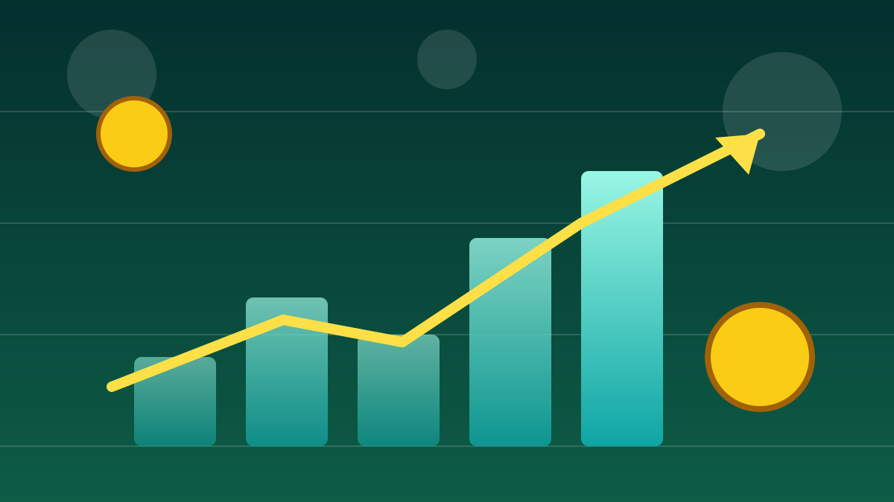

1 / 6

💰 EKONOMI
DJP Pakai AI Buat Ngintip Pajak Sawit 🌴
Kemenkeu kerahkan machine learning buat baca faktur pajak perusahaan sawit — kalau angkanya nggak klop, auto ketahuan. Geser buat tau caranya →
2 / 6
🗣️
Spill-nya dari siapa?
Info ini disampaikan Wamenkeu Nurkholisoh Ibnu Aman di forum perpajakan internasional BRITACOF ke-7, Hotel Mulia Senayan, Jakarta, Selasa (13/10/2026).
Yang diincar bukan cuma sawit — wajib pajak superkaya (HNWI) juga masuk radar.
3 / 6
🧠
Mesin pembaca faktur
Setiap perusahaan nulis deskripsi barang di faktur pajak elektronik pakai istilahnya sendiri-sendiri, jadi petugas susah nyocokin data antartransaksi.
Di sinilah machine learning kerja: baca ribuan e-faktur, lalu milah barang apa yang dijual, berapa jumlah, dan berapa harganya.
4 / 6
🌴
Cara DJP nangkepnya
DJP bandingin tiga hal: berapa tandan buah segar (TBS) yang dibeli pabrik, berapa CPO yang seharusnya dihasilkan, sama berapa yang dilaporkan di penjualan.
Kalau nggak cocok, itu jadi petunjuk awal buat penelusuran lebih dalam. Pendekatan ini sekarang mulai direplikasi ke sektor industri lain juga.
5 / 6
💰
Orang superkaya kena juga
Pemerintah lagi garap dasbor khusus wajib pajak berpenghasilan tinggi — sudah masuk tahap akhir. Dasbor ini petakan individu, keluarganya, perusahaan, dan asetnya.
AI-nya bakal baca berita dan info keterbukaan korporasi: kalau ada merger atau jual saham, nilai kekayaan di dasbor ke-update langsung. Kata Dirjen Pajak Bimo Wijayanto, AI bikin pengawasan bergeser dari reaktif jadi prediktif.
6 / 6
🤔
Efeknya ke lo apa?
Pajak yang beneran masuk makin akurat = kas negara makin gemuk. Jalan mulus, beasiswa, fasilitas umum — semua dibiayai dari situ.
Buat lo yang lagi bangun UMKM atau startup: di era data kayak gini, pembukuan rapi = aman, pembukuan ngaco = auto ketahuan sistem. Kerja jujur, tidur nyenyak.